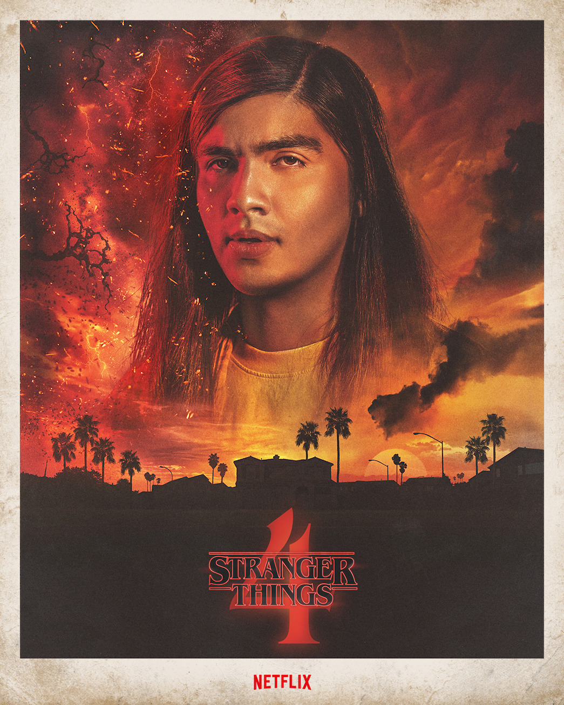
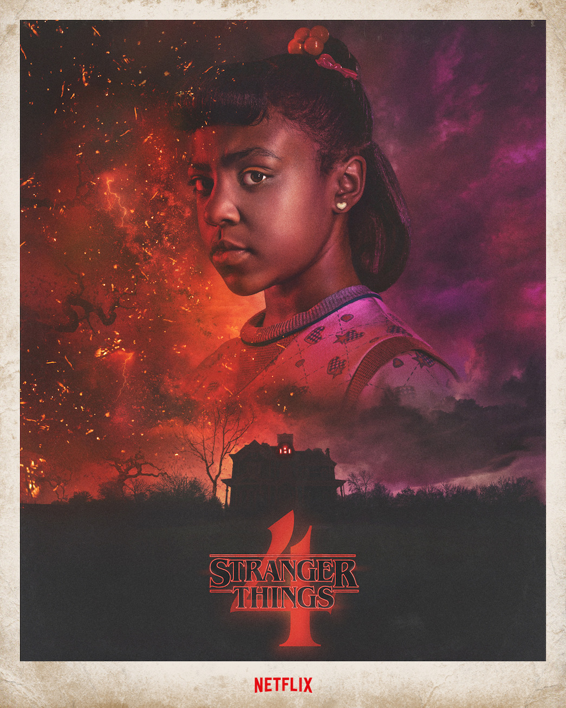

The characters of Stranger Things
Click on the headshot of your favorite characters for a full in-depth character page.

Eleven / Jane Hopper played by Millie Bobbie Brown

Mike Wheeler played by Finn Wolfhard

Will Byers played by Noah Schnapp

Max Mayfield played by Sadie Sink

Lucas Sinclair played by Caleb McLaughlin

Dustin Henderson played by Gaten Matarazzo

Nancy Wheeler played by Natalia Dyer

Steve Harrington played by Joe Keery

Jonathan Byers played by Charlie Heaton

Robin Buckley played by Maya Hawke

Joyce Byers played by Winona Ryder

Jim Hopper played by David Harbour

Eddie Munson played by Joseph Quinn

Argyle played by Eduardo Franco
